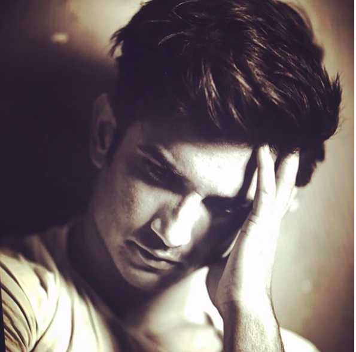
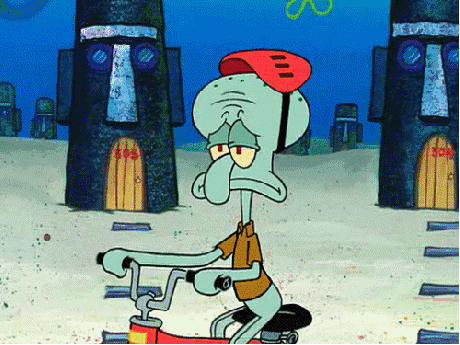
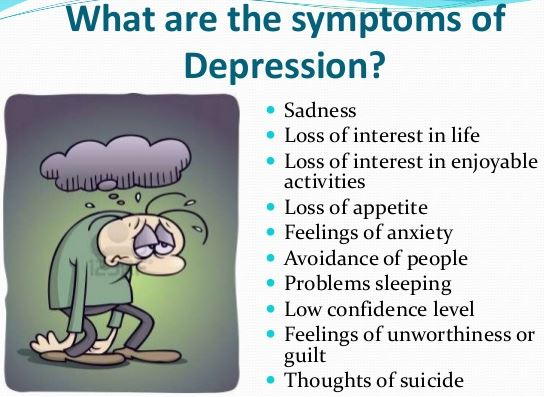
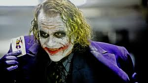

Yesterday as the news erupted in media about the suicide of the amazing Bollywood actor SUSHANT SINGH RAJPUT .
A debate started about the topic “DEPRESSION”.
We all know the word and many of us have gone through it ,
some survived and some ended things like the young actor did.

In simple words we all know that we all act upon thoughts
and we think as per our surroundings and circumstances .
Once something start to happen that is not according to our plans
we start feeling low and stressed in personal life .
Most of time we bounce back from such setbacks but if it continues to happen and
we fail to adapt to the things our brain gets confused gets into
such negative thoughts deeper causing disfunctioning of brain such as bipolar disorder,
psychotic depression etc.
At its worst, depression can lead to suicide.Close to 800 000 people die due to suicide every year.
Suicide is the second leading cause of death in 15-29-year-olds.
In todays scenario the lifestyle is such dynamic and competitive
that we fail to take care of our mental health and stress out and
crave for the things that not even matter.

According to WHO Depression is a common mental disorder.
Depression is a leading cause of disability worldwide and is a major contributor to the overall global burden of disease.
It is so common that we never know that the person sitting with us may be suffering from it.

It is very often to get news about any celeb or famous personality from the showbiz committed suicide or suffered depression ,
Some examples are Guru Dutt , YOYO Honey singh , Jia Khan, Sushant singh Rajput, marlin munroe, Katy Perry, Deepika Padukone etc etc and the list is so long,The reason is the struggle to keep your space in the business and not being able to balance between personal and professional life, Many Suffer depression caused diseases and some just quit . Some factors such as Casting couch and Nepotism are also responsible for these cases as they kill the dreams of many hustling youngsters. There are very few examples like Amitabh Bachchan and Akshay Kumar
who came from outside the industry and survived happily and managed that balance.
Now a days we as a society are failing to pass on the mental strength to our new generations.
The kids , the teenagers and the youth all are vulnerable to the mental illness caused due to the lifestyle we are promoting ,
In the developing countries like India
It isnt considered to be normal if you are visiting an psychiatrist
that makes the situation worst
just to reach so called goals that we consider to be perfect
If You are reading it and anytime you feel lonely or sad email me contact me
I am here with you.
Always Remember YOLO(You Only Live Once)